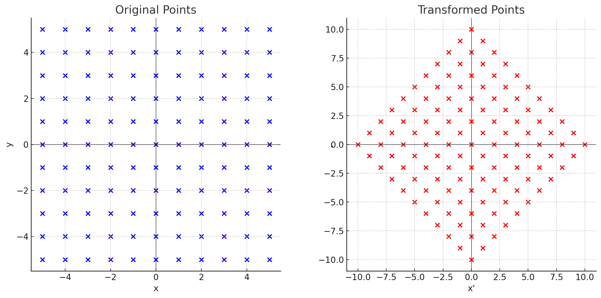
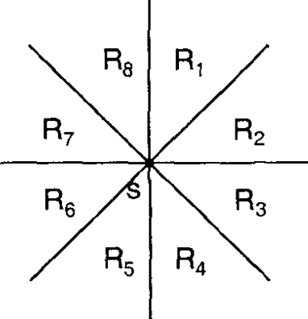
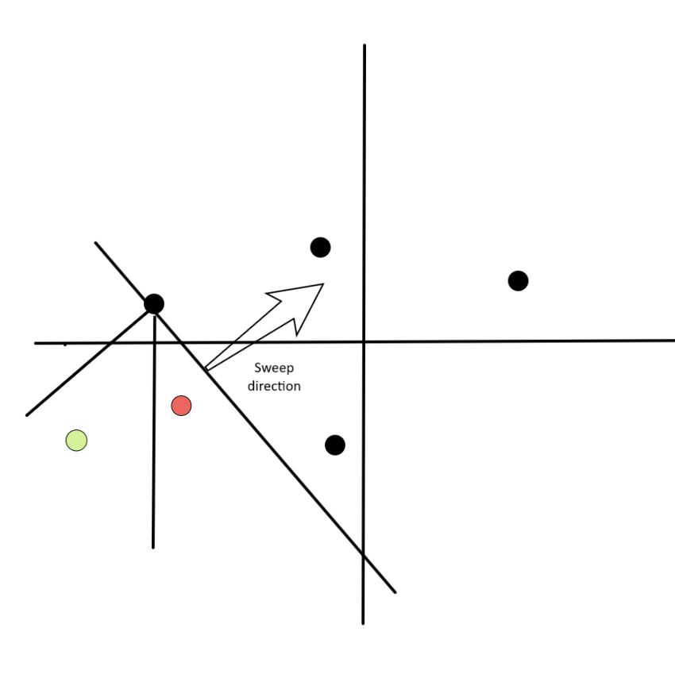

Khoảng cách Manhattan¶
Định nghĩa¶
Với các điểm $p$ và $q$ trên một mặt phẳng, ta có thể định nghĩa khoảng cách giữa chúng là tổng các hiệu số giữa tọa độ $x$ và $y$ của chúng:
Được định nghĩa như vậy, khoảng cách này tương ứng với cái gọi là hình học Manhattan (taxicab geometry), trong đó các điểm được coi là các giao lộ trong một thành phố được quy hoạch tốt, như Manhattan, nơi bạn chỉ có thể di chuyển trên các con phố theo chiều ngang hoặc chiều dọc, như hình dưới đây:

Những hình ảnh này cho thấy một vài con đường ngắn nhất từ điểm đen này sang điểm đen kia, tất cả đều có độ dài $12$.
Có một số thủ thuật và thuật toán thú vị có thể thực hiện với khoảng cách này, và chúng ta sẽ trình bày một số trong đó ở đây.
Cặp điểm xa nhất với khoảng cách Manhattan¶
Cho $n$ điểm $P$, chúng ta muốn tìm cặp điểm $p,q$ cách xa nhau nhất, nghĩa là tối đa hóa $|x_p - x_q| + |y_p - y_q|$.
Hãy thử suy nghĩ trong một chiều trước, tức là $y=0$. Quan sát chính là chúng ta có thể vét cạn (bruteforce) nếu $|x_p - x_q|$ bằng $x_p - x_q$ hoặc $-x_p + x_q$, vì nếu ta "bỏ lỡ dấu" của giá trị tuyệt đối, ta sẽ chỉ nhận được giá trị nhỏ hơn, do đó nó không thể ảnh hưởng đến kết quả. Một cách chính xác hơn, ta có:
Vì vậy, ví dụ, chúng ta có thể thử đặt $p$ sao cho $x_p$ có dấu dương, và sau đó $q$ phải có dấu âm. Theo cách này, chúng ta muốn tìm:
Lưu ý rằng chúng ta có thể mở rộng ý tưởng này thêm cho 2 (hoặc nhiều hơn!) chiều. Với $d$ chiều, chúng ta phải vét cạn $2^d$ giá trị có thể có của các dấu. Ví dụ, nếu chúng ta đang ở trong $2$ chiều và vét cạn rằng $p$ có cả hai dấu dương mà chúng ta muốn tìm:
Vì chúng ta đã làm cho $p$ và $q$ trở nên độc lập, giờ đây rất dễ dàng để tìm $p$ và $q$ giúp tối đa hóa biểu thức.
Đoạn mã dưới đây tổng quát hóa điều này cho $d$ chiều và chạy trong $O(n \cdot 2^d \cdot d)$.
long long ans = 0;
for (int msk = 0; msk < (1 << d); msk++) {
long long mx = LLONG_MIN, mn = LLONG_MAX;
for (int i = 0; i < n; i++) {
long long cur = 0;
for (int j = 0; j < d; j++) {
if (msk & (1 << j)) cur += p[i][j];
else cur -= p[i][j];
}
mx = max(mx, cur);
mn = min(mn, cur);
}
ans = max(ans, mx - mn);
}
Xoay các điểm và khoảng cách Chebyshev¶
Ai cũng biết rằng, với mọi $m, n \in \mathbb{R}$,
Để chứng minh điều này, chúng ta chỉ cần phân tích dấu của $m$ và $n$. Việc chứng minh xin để lại như một bài tập.
Chúng ta có thể áp dụng phương trình này vào công thức khoảng cách Manhattan để thấy rằng
Biểu thức cuối cùng trong phương trình trước là khoảng cách Chebyshev của các điểm $(x_1 + y_1, y_1 - x_1)$ và $(x_2 + y_2, y_2 - x_2)$. Điều này có nghĩa là, sau khi áp dụng phép biến đổi
khoảng cách Manhattan giữa các điểm $p$ và $q$ trở thành khoảng cách Chebyshev giữa $\alpha(p)$ và $\alpha(q)$.
Ngoài ra, chúng ta có thể nhận ra rằng $\alpha$ là một phép đồng dạng xoắn (spiral similarity) (xoay mặt phẳng theo sau là phép phóng đại quanh tâm $O$) với tâm $(0, 0)$, góc xoay $45^{\circ}$ theo chiều kim đồng hồ và tỉ lệ phóng đại $\sqrt{2}$.
Đây là hình ảnh giúp hình dung phép biến đổi:

Cây khung nhỏ nhất (MST) Manhattan¶
Bài toán MST Manhattan bao gồm việc, cho một số điểm trên mặt phẳng, tìm các cạnh kết nối tất cả các điểm và có tổng trọng số nhỏ nhất. Trọng số của một cạnh kết nối hai điểm chính là khoảng cách Manhattan của chúng. Để đơn giản, chúng ta giả định rằng tất cả các điểm có vị trí khác nhau. Ở đây, chúng ta trình bày cách tìm MST trong $O(n \log{n})$ bằng cách tìm cho mỗi điểm người láng giềng gần nhất của nó trong mỗi bát phân (octant), như được thể hiện bằng hình ảnh bên dưới. Điều này sẽ cho chúng ta $O(n)$ cạnh ứng viên, mà như chúng ta sẽ chỉ ra bên dưới, đảm bảo rằng chúng chứa MST. Bước cuối cùng là sử dụng một thuật toán MST tiêu chuẩn, ví dụ, thuật toán Kruskal sử dụng hợp nhất tập rời rạc (DSU).

8 bát phân tương đối so với một điểm SThuật toán trình bày ở đây lần đầu tiên được trình bày trong một bài báo của H. Zhou, N. Shenoy, và W. Nichollos (2002). Ngoài ra còn có một thuật toán nổi tiếng khác sử dụng cách tiếp cận chia để trị của J. Stolfi, cũng rất thú vị và chỉ khác ở cách họ tìm người láng giềng gần nhất trong mỗi bát phân. Cả hai đều có cùng độ phức tạp, nhưng thuật toán trình bày ở đây dễ cài đặt hơn và có hằng số nhỏ hơn.
Trước tiên, hãy hiểu tại sao chỉ cần xem xét người láng giềng gần nhất trong mỗi bát phân là đủ. Ý tưởng là chỉ ra rằng với một điểm $s$ và bất kỳ hai điểm nào khác $p$ và $q$ trong cùng một bát phân, $d(p, q) < \max(d(s, p), d(s, q))$. Điều này rất quan trọng, vì nó cho thấy nếu có một MST mà $s$ được kết nối với cả $p$ và $q$, chúng ta có thể xóa một trong các cạnh này và thêm cạnh $(p,q)$, điều này sẽ làm giảm tổng chi phí. Để chứng minh điều này, ta giả sử không mất tính tổng quát rằng $p$ và $q$ nằm trong bát phân $R_1$, được xác định bởi: $x_s \leq x$ và $x_s - y_s > x - y$, sau đó thực hiện một vài trường hợp. Hình ảnh dưới đây đưa ra một số trực giác về lý do tại sao điều này đúng.
 Trực giác, sự giới hạn của bát phân làm cho việc $p$ và $q$ cùng gần $s$ hơn là gần nhau trở nên không thể xảy ra
Trực giác, sự giới hạn của bát phân làm cho việc $p$ và $q$ cùng gần $s$ hơn là gần nhau trở nên không thể xảy ra
Vì vậy, câu hỏi chính là làm thế nào để tìm người láng giềng gần nhất trong mỗi bát phân cho mỗi điểm trong số $n$ điểm.
Người láng giềng gần nhất trong mỗi bát phân trong O(n log n)¶
Để đơn giản, chúng ta tập trung vào bát phân NNE ($R_1$ trong hình trên). Tất cả các hướng khác có thể được tìm thấy bằng cùng một thuật toán bằng cách xoay đầu vào.
Chúng ta sẽ sử dụng cách tiếp cận quét đường (sweep-line). Chúng ta xử lý các điểm từ tây-nam sang đông-bắc, tức là theo $x + y$ không giảm. Chúng ta cũng duy trì một tập hợp các điểm chưa tìm thấy người láng giềng gần nhất của chúng, được gọi là "tập hợp hoạt động" (active set). Chúng ta thêm các hình ảnh dưới đây để giúp hình dung thuật toán.
 Bằng màu đen với mũi tên, bạn có thể thấy hướng của đường quét. Tất cả các điểm dưới đường này nằm trong tập hoạt động, và các điểm phía trên chưa được xử lý. Bằng màu xanh lá cây, chúng ta thấy các điểm nằm trong bát phân của điểm đang được xử lý. Bằng màu đỏ là các điểm không nằm trong bát phân đang tìm kiếm.
Bằng màu đen với mũi tên, bạn có thể thấy hướng của đường quét. Tất cả các điểm dưới đường này nằm trong tập hoạt động, và các điểm phía trên chưa được xử lý. Bằng màu xanh lá cây, chúng ta thấy các điểm nằm trong bát phân của điểm đang được xử lý. Bằng màu đỏ là các điểm không nằm trong bát phân đang tìm kiếm.

Trong hình ảnh này, chúng ta thấy tập hoạt động sau khi xử lý điểm $p$. Lưu ý rằng $2$ điểm xanh lá cây của hình trước đã có $p$ trong bát phân bắc-đông-bắc của nó và không còn nằm trong tập hoạt động nữa, vì chúng đã tìm thấy người láng giềng gần nhất của mình.Khi chúng ta thêm một điểm mới $p$, đối với mỗi điểm $s$ có điểm này trong bát phân của nó, ta có thể gán an toàn $p$ là người láng giềng gần nhất. Điều này đúng vì khoảng cách của chúng là $d(p,s) = |x_p - x_s| + |y_p - y_s| = (x_p + y_p) - (x_s + y_s)$, do $p$ nằm trong bát phân bắc-đông-bắc. Vì tất cả các điểm tiếp theo sẽ không có giá trị $x + y$ nhỏ hơn do bước sắp xếp, $p$ được đảm bảo có khoảng cách nhỏ hơn. Sau đó, chúng ta có thể loại bỏ tất cả các điểm đó khỏi tập hoạt động, và cuối cùng thêm $p$ vào tập hoạt động.
Câu hỏi tiếp theo là làm thế nào để tìm hiệu quả những điểm $s$ có $p$ trong bát phân bắc-đông-bắc. Đó là, những điểm $s$ nào thỏa mãn:
- $x_s \leq x_p$
- $x_p - y_p < x_s - y_s$
Vì không có điểm nào trong tập hoạt động nằm trong vùng $R_1$ của điểm khác, nên đối với hai điểm $q_1$ và $q_2$ trong tập hoạt động, ta cũng có $x_{q_1} \neq x_{q_2}$ và thứ tự của chúng ngụ ý $x_{q_1} < x_{q_2} \implies x_{q_1} - y_{q_1} \leq x_{q_2} - y_{q_2}$.
Bạn có thể thử hình dung điều này trên các hình ảnh trên bằng cách coi thứ tự của $x - y$ như một "đường quét" đi từ tây-bắc sang đông-nam, tức là vuông góc với đường đã vẽ.
Điều này có nghĩa là nếu chúng ta giữ tập hoạt động được sắp xếp theo $x$, các ứng viên $s$ sẽ được đặt liên tiếp. Sau đó, chúng ta có thể tìm $x_s \leq x_p$ lớn nhất và xử lý các điểm theo thứ tự giảm dần của $x$ cho đến khi điều kiện thứ hai $x_p - y_p < x_s - y_s$ bị phá vỡ (chúng ta thực sự có thể cho phép $x_p - y_p = x_s - y_s$ và điều đó xử lý trường hợp các điểm có tọa độ bằng nhau). Lưu ý rằng vì chúng ta xóa khỏi tập hợp ngay sau khi xử lý, điều này sẽ có độ phức tạp phân bổ là $O(n \log(n))$. Bây giờ chúng ta đã có điểm gần nhất theo hướng đông-bắc, chúng ta xoay các điểm và lặp lại. Có thể chứng minh rằng thực tế chúng ta cũng tìm được theo cách này người láng giềng gần nhất theo hướng tây-nam, vì vậy chúng ta có thể chỉ lặp lại 4 lần thay vì 8.
Tóm lại, chúng ta:
- Sắp xếp các điểm theo $x + y$ theo thứ tự không giảm;
- Với mỗi điểm, chúng ta lặp qua tập hoạt động bắt đầu với điểm có $x$ lớn nhất sao cho $x \leq x_p$, và chúng ta ngắt vòng lặp nếu $x_p - y_p \geq x_s - y_s$. Với mỗi điểm hợp lệ $s$, chúng ta thêm cạnh $(s,p, d(s,p))$ vào danh sách của mình;
- Chúng ta thêm điểm $p$ vào tập hoạt động;
- Xoay các điểm và lặp lại cho đến khi chúng ta duyệt qua tất cả các bát phân.
- Áp dụng thuật toán Kruskal vào danh sách các cạnh để có được MST.
Dưới đây bạn có thể tìm thấy một cách cài đặt, dựa trên KACTL.
struct point {
long long x, y;
};
// Returns a list of edges in the format (weight, u, v).
// Passing this list to Kruskal algorithm will give the Manhattan MST.
vector<tuple<long long, int, int>> manhattan_mst_edges(vector<point> ps) {
vector<int> ids(ps.size());
iota(ids.begin(), ids.end(), 0);
vector<tuple<long long, int, int>> edges;
for (int rot = 0; rot < 4; rot++) { // for every rotation
sort(ids.begin(), ids.end(), [&](int i, int j){
return (ps[i].x + ps[i].y) < (ps[j].x + ps[j].y);
});
map<int, int, greater<int>> active; // (xs, id)
for (auto i : ids) {
for (auto it = active.lower_bound(ps[i].x); it != active.end();
active.erase(it++)) {
int j = it->second;
if (ps[i].x - ps[i].y > ps[j].x - ps[j].y) break;
assert(ps[i].x >= ps[j].x && ps[i].y >= ps[j].y);
edges.push_back({(ps[i].x - ps[j].x) + (ps[i].y - ps[j].y), i, j});
}
active[ps[i].x] = i;
}
for (auto &p : ps) { // rotate
if (rot & 1) p.x *= -1;
else swap(p.x, p.y);
}
}
return edges;
}
Các bài toán¶
- AtCoder Beginner Contest 178E - Dist Max
- CodeForces 1093G - Multidimensional Queries
- CodeForces 944F - Game with Tokens
- AtCoder Code Festival 2017D - Four Coloring
- The 2023 ICPC Asia EC Regionals Online Contest (I) - J. Minimum Manhattan Distance
- Petrozavodsk Winter Training Camp 2016 Contest 4 - B. Airports